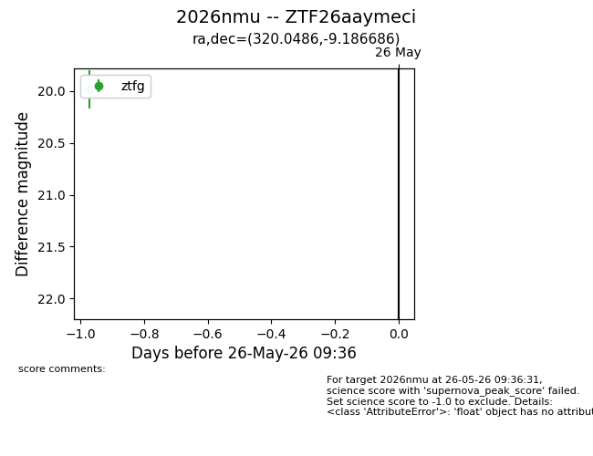
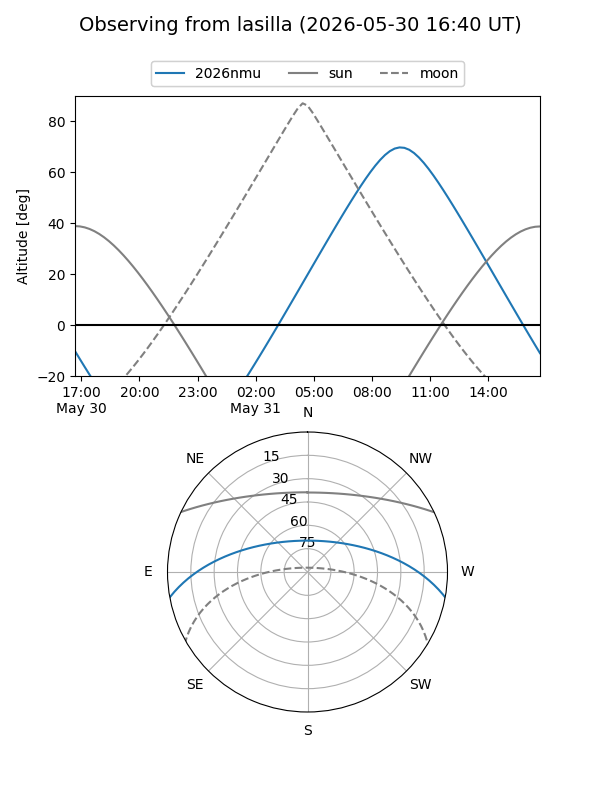
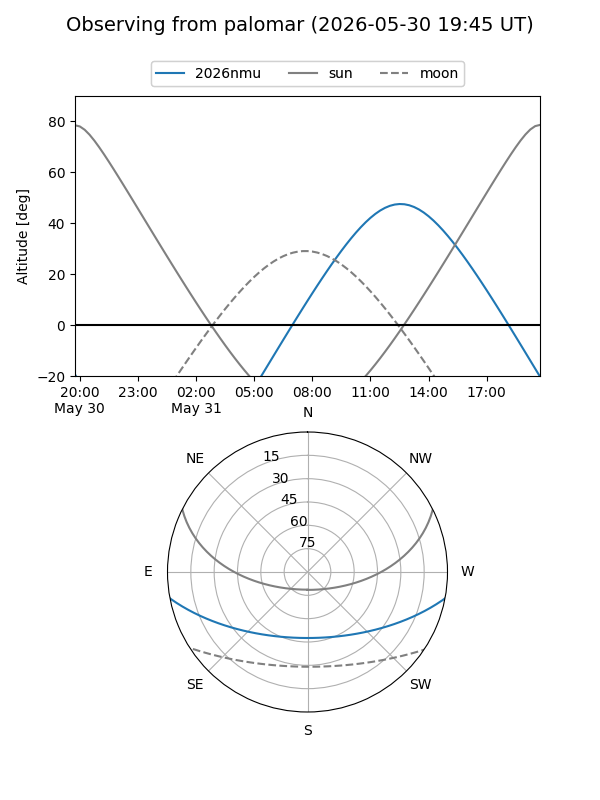

2026nmu
Target 2026nmu at 2026-05-26 09:38
Aliases and brokers:
lsst-FINK: link
lsst-Lasair: link
lsst-ALeRCE: link
ztf-FINK: link
ztf-Lasair: link
ztf-ALeRCE: link
TNS: link
YSE: link
alt names
ZTF26aaymeci (ztf,fink_ztf)
2026nmu (tns,yse)
Coordinates:
equatorial (ra, dec) = 320.0486,-9.18669
equatorial (HMS+DMS) = 21:20:11.67,-09:11:12.07
galactic (l, b) = (42.3180,-37.14616)
Flags:
TNS confirmed: nan
Photometry:
last ztfg=19.98
1 ztfg detections
Lightcurve

Visibility


Additional plots